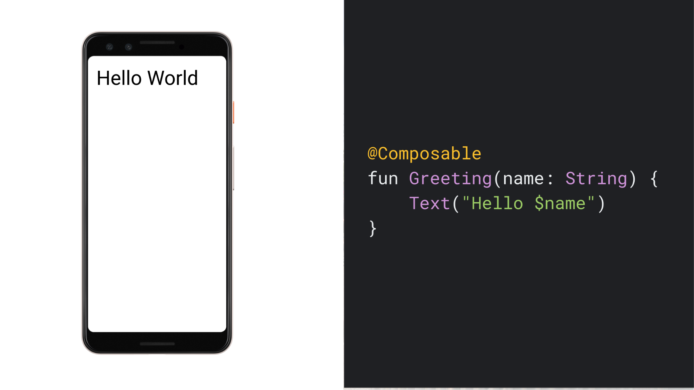
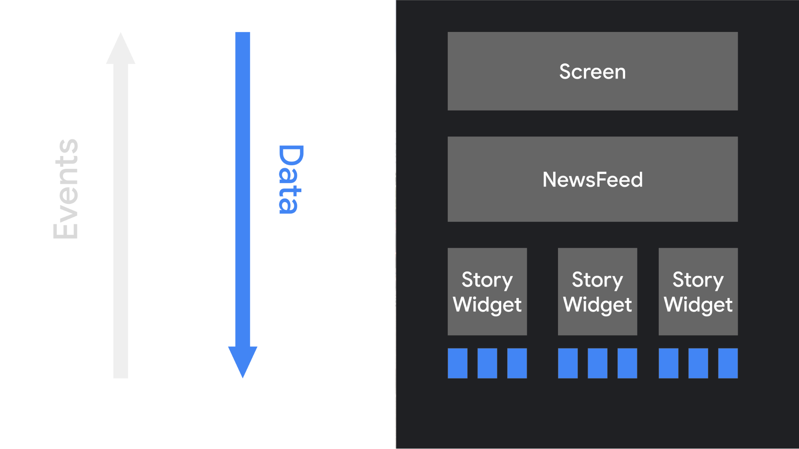
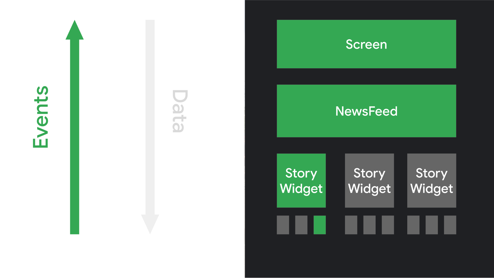

Jetpack Compose is a modern declarative UI Toolkit for Android. Compose simplifies writing and maintaining your app UI by providing a declarative API that lets you render your app UI without imperatively mutating frontend views. This terminology needs some explanation, but the implications are important for your app design.
The declarative programming paradigm
Historically, an Android view hierarchy has been representable as a tree of UI
widgets. As the state of the app changes because of things like user
interactions, the UI hierarchy needs to be updated to display the current data.
The most common way of updating the UI is to walk the tree using functions like
findViewById(), and change
nodes by calling methods like button.setText(String),
container.addChild(View), or img.setImageBitmap(Bitmap). These methods
change the internal state of the widget.
Manipulating views manually increases the likelihood of errors. If a piece of data is rendered in multiple places, you might forget to update one of the views that shows it. This can also lead to illegal states, when two updates conflict in an unexpected way. For example, an update might try to set a value of a node that was just removed from the UI. In general, the software maintenance complexity grows with the number of views that require updating.
Over the last several years, the entire industry has started shifting to a declarative UI model, which simplifies building and updating user interfaces.
The technique works by conceptually regenerating the entire screen from scratch, then applying only the necessary changes. This approach avoids the complexity of manually updating a stateful view hierarchy. Compose is a declarative UI framework.
One challenge with regenerating the entire screen is that it is potentially expensive, in terms of time, computing power, and battery usage. To mitigate this cost, Compose intelligently chooses which parts of the UI need to be redrawn at any given time. This does have some implications for how you design your UI components, as discussed in Recomposition.
An example composable function
Using Compose, you can build your user interface by defining a set of
composable functions that take in data and emit UI elements. An example
is a Greeting widget, which takes in a String and emits a Text widget
which displays a greeting message.

A few noteworthy things about this function:
- Annotation: The function is annotated with the
@Composableannotation. All composable functions must have this annotation. This annotation informs the Compose compiler that this function is intended to convert data into UI. - Data input: The function takes in data. Composable functions can accept
parameters, which let the app logic describe the UI. In this case, our
widget accepts a
Stringso it can greet the user by name. - UI display: The function displays text in the UI. It does so by calling
the
Text()composable function, which actually creates the text UI element. Composable functions emit UI hierarchy by calling other composable functions. - No return value: The function doesn't return anything. Compose functions that emit UI don't need to return anything, because they describe the target screen state instead of constructing UI widgets.
Properties: This function is fast, idempotent, and free of side-effects.
- The function behaves the same way when called multiple times with the
same argument, and it does not use other values such as global variables
or calls to
random(). - The function describes the UI without any side-effects, such as modifying properties or global variables.
In general, all composable functions must be written with these properties, for reasons discussed in Recomposition.
- The function behaves the same way when called multiple times with the
same argument, and it does not use other values such as global variables
or calls to
The declarative paradigm shift
With many imperative object-oriented UI toolkits, you initialize the UI by instantiating a tree of widgets. You often do this by inflating an XML layout file. Each widget maintains its own internal state, and exposes getter and setter methods that let the app logic interact with the widget.
In Compose's declarative approach, widgets are relatively stateless and don't
expose setter or getter functions. In fact, widgets are not exposed as objects.
You update the UI by calling the same composable function with different
arguments. This simplifies providing state to architectural patterns such as
a ViewModel, as described in the
Guide to app architecture. Then, your composables are
responsible for transforming the current application state into a UI every time
the observable data updates.

When the user interacts with the UI, the UI raises events such as onClick.
Those events should notify the app logic, which can then change the app's state.
When the state changes, the composable functions are called again with the new
data. This causes the UI elements to be redrawn--this process is called
recomposition.

Dynamic content
Because composable functions are written in Kotlin instead of XML, they can be as dynamic as any other Kotlin code. For example, suppose you want to build a UI that greets a list of users:
@Composable
fun Greeting(names: List<String>) {
for (name in names) {
Text("Hello $name")
}
}This function takes in a list of names and generates a greeting for each user.
Composable functions can be quite sophisticated. You can use if statements to
decide if you want to show a particular UI element. You can use loops. You can
call helper functions. You have the full flexibility of the underlying language.
This power and flexibility is one of the key advantages of Jetpack Compose.
Recomposition
In an imperative UI model, to change a widget, you call a setter on the widget to change its internal state. In Compose, you call the composable function again with new data. Doing so causes the function to be recomposed--the widgets emitted by the function are redrawn, if necessary, with new data. The Compose framework can intelligently recompose only the components that changed.
For example, consider this composable function which displays a button:
@Composable
fun ClickCounter(clicks: Int, onClick: () -> Unit) {
Button(onClick = onClick) {
Text("I've been clicked $clicks times")
}
}Every time the button is clicked, the caller updates the value of clicks.
Compose calls the lambda with the Text function again to show the new value;
this process is called recomposition. Other functions that don't depend on the
value are not recomposed.
As we discussed, recomposing the entire UI tree can be computationally expensive, which uses computing power and battery life. Compose solves this problem with this intelligent recomposition.
Recomposition is the process of calling your composable functions again when inputs change. When Compose recomposes based on new inputs, it calls only the functions or lambdas that might have changed, and skips the rest. By skipping functions or lambdas with unchanged parameters, Compose recomposes efficiently.
Never depend on side-effects from executing composable functions, since a function's recomposition may be skipped. If you do, users may experience strange and unpredictable behavior in your app. A side-effect is any change that is visible to the rest of your app. For example, these actions are all dangerous side-effects:
- Writing to a property of a shared object
- Updating an observable in
ViewModel - Updating shared preferences
Composable functions might be re-executed as often as every frame, such as when an animation is being rendered. Composable functions should be fast to avoid jank during animations. If you need to do expensive operations, such as reading from shared preferences, do it in a background coroutine and pass the value result to the composable function as a parameter.
As an example, this code creates a composable to update a value in
SharedPreferences. The composable shouldn't read or write from shared
preferences itself. Instead, this code moves the read and write to a ViewModel
in a background coroutine. The app logic passes the current value with a
callback to trigger an update.
@Composable
fun SharedPrefsToggle(
text: String,
value: Boolean,
onValueChanged: (Boolean) -> Unit
) {
Row {
Text(text)
Checkbox(checked = value, onCheckedChange = onValueChanged)
}
}This document discusses a number of things to be aware of when you use Compose:
- Recomposition skips as many composable functions and lambdas as possible.
- Recomposition is optimistic and may be canceled.
- A composable function might be run quite frequently, as often as every frame of an animation.
- Composable functions can execute in parallel.
- Composable functions can execute in any order.
The following sections will cover how to build composable functions to support recomposition. In every case, the best practice is to keep your composable functions fast, idempotent, and side-effect free.
Recomposition skips as much as possible
When portions of your UI are invalid, Compose does its best to recompose just
the portions that need to be updated. This means it may skip to re-run a single
Button's composable without executing any of the composables higher or lower
in the UI tree.
Every composable function and lambda might recompose by itself. The following example demonstrates how recomposition can skip some elements when rendering a list:
/**
* Display a list of names the user can click with a header
*/
@Composable
fun NamePicker(
header: String,
names: List<String>,
onNameClicked: (String) -> Unit
) {
Column {
// this will recompose when [header] changes, but not when [names] changes
Text(header, style = MaterialTheme.typography.bodyLarge)
HorizontalDivider()
// LazyColumn is the Compose version of a RecyclerView.
// The lambda passed to items() is similar to a RecyclerView.ViewHolder.
LazyColumn {
items(names) { name ->
// When an item's [name] updates, the adapter for that item
// will recompose. This will not recompose when [header] changes
NamePickerItem(name, onNameClicked)
}
}
}
}
/**
* Display a single name the user can click.
*/
@Composable
private fun NamePickerItem(name: String, onClicked: (String) -> Unit) {
Text(name, Modifier.clickable(onClick = { onClicked(name) }))
}Each of these scopes might be the only thing to execute during a recomposition.
Compose might skip to the Column lambda without executing any of its parents
when the header changes. And when executing Column, Compose might choose to
skip the LazyColumn's items if names didn't change.
Again, all composable functions or lambdas should be side-effect free. When you need to perform a side-effect, trigger it from a callback.
Recomposition is optimistic
Recomposition starts whenever Compose thinks that the parameters of a composable might have changed. Recomposition is optimistic, which means Compose expects to finish recomposition before the parameters change again. If a parameter does change before recomposition finishes, Compose might cancel the recomposition and restart it with the new parameter.
When recomposition is canceled, Compose discards the UI tree from the recomposition. If you have any side-effects that depend on the UI being displayed, the side-effect will be applied even if composition is canceled. This can lead to inconsistent app state.
Verify that all composable functions and lambdas are idempotent and side-effect free to handle optimistic recomposition.
Composable functions might run quite frequently
In some cases, a composable function might run for every frame of a UI animation. If the function performs expensive operations, like reading from device storage, the function can cause UI jank.
For example, if your widget tried to read device settings, it could potentially read those settings hundreds of times a second, with disastrous effects on your app's performance.
If a composable function needs data, define parameters for that data. You can
then move expensive work to another thread, outside of composition, and pass
the resulting value to the composable function as a parameter using
mutableStateOf or LiveData.
Composable functions could run in parallel
Compose could optimize recomposition by running composable functions in parallel. This would let Compose take advantage of multiple cores, and run composable functions not on the screen at a lower priority.
This optimization would mean a composable function might execute within a pool
of background threads.
If a composable function calls a function on a ViewModel,
Compose might call that function from several threads at the same time.
To verify your application behaves correctly, all composable functions should
have no side-effects. Instead, trigger side-effects from callbacks such as
onClick that always execute on the UI thread.
When a composable function is invoked, the invocation might occur on a different thread from the caller. That means code that modifies variables in a composable lambda should be avoided–both because such code is not thread-safe, and because it is an impermissible side-effect of the composable lambda.
Here's an example showing a composable that displays a list and its count:
@Composable
fun ListComposable(myList: List<String>) {
Row(horizontalArrangement = Arrangement.SpaceBetween) {
Column {
for (item in myList) {
Text("Item: $item")
}
}
Text("Count: ${myList.size}")
}
}This code is side-effect free, and transforms the input list to UI. This is great code for displaying a small list. However, if the function writes to a local variable, this code won't be thread-safe or correct:
@Composable
fun ListWithBug(myList: List<String>) {
var items = 0
Row(horizontalArrangement = Arrangement.SpaceBetween) {
Column {
for (item in myList) {
Card {
Text("Item: $item")
items++ // Avoid! Side-effect of the column recomposing.
}
}
}
Text("Count: $items")
}
}In this example, items is modified with every recomposition. That could be
every frame of an animation, or when the list updates. Either way, the UI will
display the wrong count. Because of this, writes like this are not supported in
Compose; by prohibiting those writes, we allow the framework to change threads
to execute composable lambdas.
Composable functions can execute in any order
If you look at the code for a composable function, you might assume that the code is run in the order it appears. But this isn't necessarily true. If a composable function contains calls to other composable functions, those functions might run in any order. Compose has the option of recognizing that some UI elements are higher priority than others, and drawing them first.
For example, suppose you have code like this to draw three screens in a tab layout:
@Composable
fun ButtonRow() {
MyFancyNavigation {
StartScreen()
MiddleScreen()
EndScreen()
}
}The calls to StartScreen, MiddleScreen, and EndScreen might happen in any
order. This means you can't, for example, have StartScreen() set some global
variable (a side-effect) and have MiddleScreen() take advantage of that
change. Instead, each of those functions needs to be self-contained.
Learn more
To learn more about how to think in Compose and composable functions, see the following additional resources.